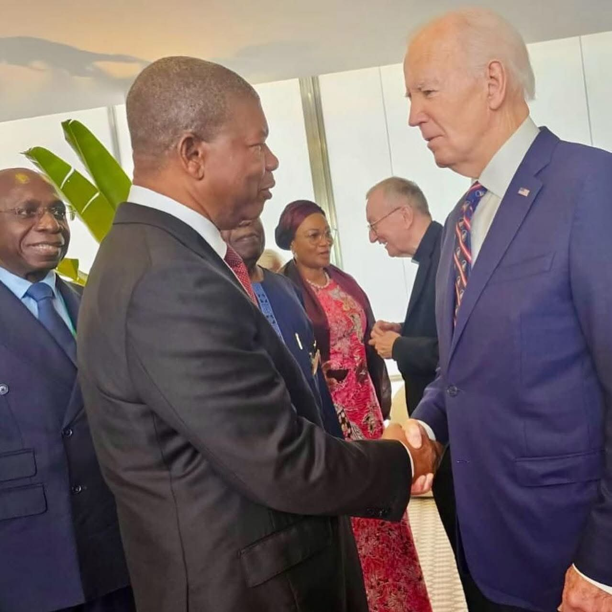
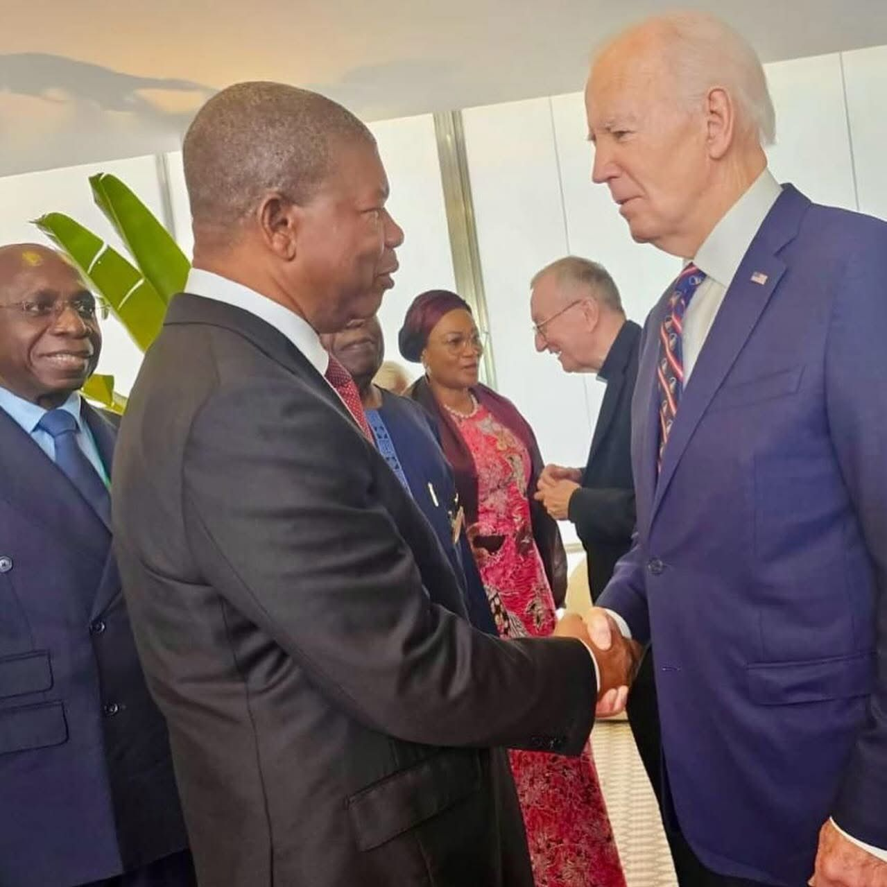

A Limusine blindadade Biden Chega a Luanda para Visita Oficial a Angola
Luanda - O presidente dos Estados Unidos, Joe Biden, chega a Angola na segunda-feira, 2 de Dezembro, para uma visita de Estado de três dias, e a segurança será uma das prioridades durante sua estadia. Uma das estrelas dessa operação é o famoso "The Beast", a limusine presidencial que acompanha o presidente em todas as suas viagens internacionais e que é considerada um verdadeiro "bunker sobre rodas". O veículo, que já se tornou uma lenda entre os sistemas de transporte presidencial, chegou a Luanda no âmbito da visita de Biden a Angola, onde ele se encontrará com o Presidente João Lourenço para discutir temas como segurança, infraestrutura e o fortalecimento das relações bilaterais entre os dois países. Segurança de Alto Nível para a Visita de Biden O "The Beast" é equipado com tecnologia de ponta para garantir a máxima segurança do presidente. A limusine, que faz parte do esquema de segurança do Serviço Secreto dos EUA, é blindada com camadas de aço, cerâmica e titânio, formando uma armadura capaz de resistir a ataques explosivos e bioquímicos. Com uma blindagem de 20 cm de espessura, o carro é uma fortaleza móvel, garantindo a proteção do presidente em qualquer situação. Características do "The Beast" Blindagem à prova de balas e explosões: A estrutura do veículo é projetada para resistir a ataques de alta intensidade, incluindo explosões e disparos. Tanques de oxigênio e estoque de sangue: Como medida de precaução em emergências, a limusine tem tanques de oxigênio e um estoque de sangue compatível com o tipo sanguíneo do presidente. Sistema de comunicação avançado: O "The Beast" está equipado com tecnologia de ponta, permitindo comunicação constante com o Serviço Secreto e outros membros da segurança presidencial. Visão noturna e defesa química: O carro possui um sistema de visão noturna e capacidade para disparar gás lacrimogêneo, caso seja necessário proteger o presidente de ameaças externas. Maçanetas eletrificadas e monitoramento aéreo: Para garantir a segurança do presidente, o veículo também conta com maçanetas eletrificadas que impedem o acesso não autorizado, além de varreduras antibomba e monitoramento aéreo.
 
